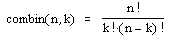
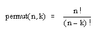

Combinations and Permutations |
combin(n, k) Returns the number of subsets of k elements that can be formed from n elements. Each subset is known as a combination, defined as

permut(n, k) Returns the number of ways of ordering n distinct elements taken k at a time. Each ordered arrangement is known as a permutation, defined as
